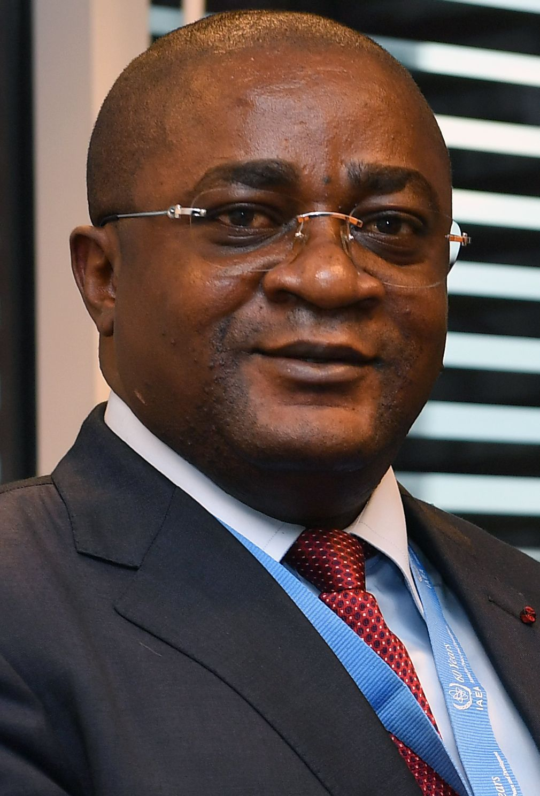

Garde des Sceaux · Ministre de la Justice, des Droits Humains et de la Promotion des Peuples Autochtones · Député d'Ewo · PCT
Un homme de terrain, de conviction et de résultats. Une vie au service du peuple congolais et de la Cuvette-Ouest.
Ange Aimé Wilfrid BININGA est l'une des personnalités les plus emblématiques de la vie politique et judiciaire du Congo-Brazzaville. Docteur en droit, Inspecteur principal du Trésor, Député d'Ewo et Garde des Sceaux — son parcours est celui d'un homme d'État forgé par l'exigence, le service public et l'amour de son pays.
Né dans la terre de la Cuvette-Ouest, Ange Aimé Wilfrid BININGA grandit avec le sens du devoir chevillé au corps. Armé d'un Doctorat en droit, il intègre la haute fonction publique et gravit les échelons à la Direction générale du Trésor public jusqu'au rang d'Inspecteur principal — une position qui exige rigueur, intégrité et maîtrise des finances de l'État. Il apportera également sa compétence à la Direction générale de la Santé, où il occupera des fonctions stratégiques de conseiller ministeriel. C'est cette double expertise — juridique et administrative — qui fera de lui un commis de l'État hors du commun.
En 2016, le Président de la République lui confie le portefeuille de Ministre de la Fonction publique et de la Réforme de l'État. Il s'attelle aussitôt à moderniser l'administration congolaise, à dynamiser l'emploi des jeunes fonctionnaires et à impulser les réformes structurelles nécessaires à la diversification économique nationale. Le 19 août 2017, les électeurs de la 1re circonscription d'Ewo lui accordent leur confiance en l'élisant Député à l'Assemblée Nationale — consécration populaire d'un engagement profond envers sa terre natale.
En tant que Ministre de la Justice, il inscrit son action dans l'histoire en portant et faisant adopter en 2018 la loi instituant la Haute Autorité de lutte contre la corruption — un texte fondateur voté par 107 voix pour, 6 contre et 1 abstention, symbole d'une volonté nationale de rupture avec l'impunité. Une réforme institutionnelle qui restera comme l'une des plus importantes de la décennie.
Aujourd'hui, en qualité de Garde des Sceaux, Ministre de la Justice, des Droits Humains et de la Promotion des Peuples Autochtones, il porte la voix du Congo sur la scène internationale. En février 2026, il conduit à Paris des négociations cruciales avec son homologue français Gérald Darmanin pour rénover la convention de coopération judiciaire Congo-France — un accord vieux de plus de cinquante ans qu'il entend adapter aux enjeux du monde contemporain. Juriste, réformateur, diplomate : Ange Aimé Wilfrid BININGA incarne une vision exigeante et ambitieuse du service de l'État.
Six axes stratégiques pour transformer Ewo et renforcer le Congo.
Chaque engagement de ce programme est issu d'échanges directs avec les habitants d'Ewo, les chefs de village, les jeunes, les femmes entrepreneurs et les professionnels de santé et d'éducation.
Étendre la justice au cœur de la Cuvette-Ouest. Chaque citoyen doit pouvoir accéder à un tribunal, un avocat, une décision équitable.
Fort de son expérience au Ministère de la Fonction publique, il porte un plan ambitieux pour l'emploi des jeunes et la dignité des travailleurs d'Ewo.
Désenclaver la Cuvette-Ouest. Des routes, des ponts, de l'électricité — les bases d'un développement économique durable.
La jeunesse d'Ewo est l'avenir du Congo. Investir dans l'éducation, c'est bâtir la nation de demain.
Un accès aux soins de qualité dans toute la circonscription. La santé est un droit, pas un privilège.
Valoriser les richesses naturelles de la Cuvette-Ouest. Soutenir les agriculteurs et créer une économie locale forte et résiliente.
Ange Aimé Wilfrid BININGA, Garde des Sceaux, Ministre de la Justice, a été reçu place Vendôme par son homologue français Gérald Darmanin. L'objet : la révision de la convention de coopération judiciaire liant les deux pays depuis 1974. Trois nouvelles conventions portant sur l'entraide judiciaire, les extraditions et les transfèrements sont en cours de négociation, avec pour objectif une signature à l'été 2026. Une nouvelle dynamique diplomatique saluée par les deux ministères.
Vous avez une réclamation, une préoccupation ou souhaitez prendre contact avec l'équipe du Député ? Soumettez votre demande d'audience et nous vous reviendrons dans les meilleurs délais.
Remplissez le formulaire ci-dessous, notre équipe vous contactera sous 48h
Parce qu'Ewo mérite un homme qui connaît l'État de l'intérieur et le terrain de cœur.
Notre équipe répond à vos questions, traite vos demandes de rencontre et organise vos échanges avec le candidat Aimé BININGA.